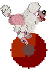
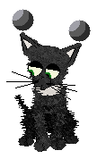
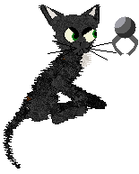
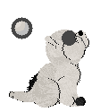
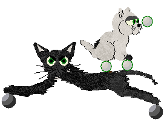
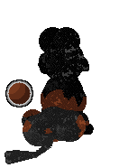
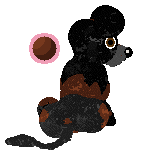
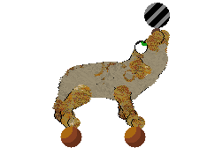
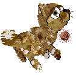
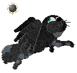

Pet Orbs! I got Pet orbs!
~~~~~~~~~~~~~~~~~~~~~~~~~~~~~
Thanks to Ashien, my petz now have orbs to reflect their natures and poses. An enchanting idea, along the lines of having guardian angels for your site -- but instead, it's orbs which match the mood of your pet's picture.
Oscar running his Orb

And Dambo in cute and devilish nood
 
Here's Perky, chubby little so-and-so...

...Just as aloof whilst doing a balancing-act with Dambo!

Demon deep in meditation, then coming around from it
 
Cassie doing what Cassie does best:

While Jordan and Skyheaven show off their Orbs with Auras!
 
Aren't they great? If you want some too, I quote her words from The Petz Board: 'To have your pictures "orbified" all you have to do is e-mail me your pictures (as bitmaps, please!) to Kait.Az@unseeuniversity.zzn.com and I will assign them an appropriate orb as soon as humanly possible.'
If you want orbs on your actual petz, take a look at my Emoticon petz\breed pages
You can also find petz with permanent orbs which show in the game, at Sue's the Petz Boardwalk
.